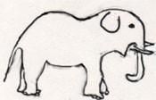

大象漫談 (1)江銘輝 五夢網

圖1：亞洲象(左)與非洲象(右)
一、 象的分類
象分非洲象屬和亞洲象屬，非洲象有兩種：即普通非洲象（也叫熱帶草原象或灌木象）和非洲森林象，亞洲象屬只有亞洲象一種（也叫印度象）。象廣泛分佈在非洲撒哈拉沙漠以南和南亞及東南亞以至中國南部邊境的熱帶及亞熱帶地區。
二、 陸地上最大的動物
象是陸上最大的動物，印度象的高有2.5到3公尺，體重可達四至五公噸。非洲象體形更大，身高有3至4公尺，體重5到7公噸。
象是目前世界上最大的陸生動物，但因為海上的鯨魚比牠大。所以在世界上的動物，牠排名第二。
三、 非洲象與印度象比較
|
種類
|
非洲象
|
印度象
|
|
大小
背部形狀
圖
|
身高：3〜4公尺
體重：5〜7公噸
體長：6〜7公尺
肩、臀高，背部凹。
圖： 
|
身高：2.5〜3公尺
體重：4〜5公噸
體長：5〜6公尺
肩、臀凹，背部隆。
圖：
|
|
頭
耳
圖
|
較平緩
大耳、三角形
圖：
|
有二個瘤
較小，四方形
圖：
|
|
鼻尖
|
上下均突出
圖：
|
只有上面突出
圖：
|
|
象牙
下唇
圖
|
較長
沒有下垂
圖：雌(左)、雄(右 )

|
較短，雌象自外看不出來
長而下垂
圖： 雌(左)、雄(右 )

|
|
蹄數
圖
|
前腳：4〜5隻
後腳：3〜4隻
圖： 
|
前腳： 5隻
後腳：4隻
圖：
|